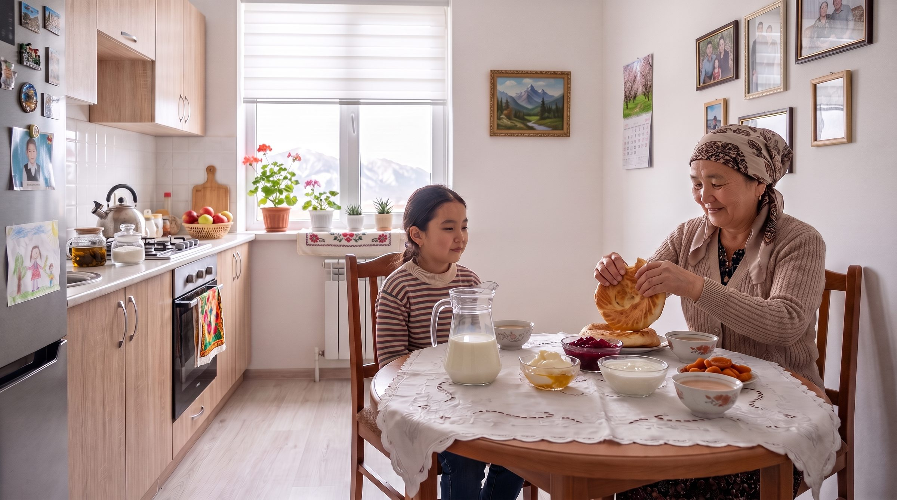
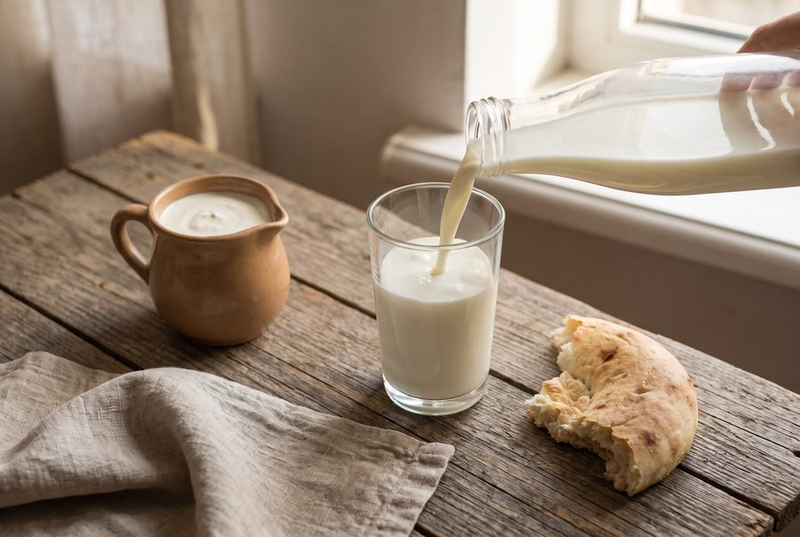
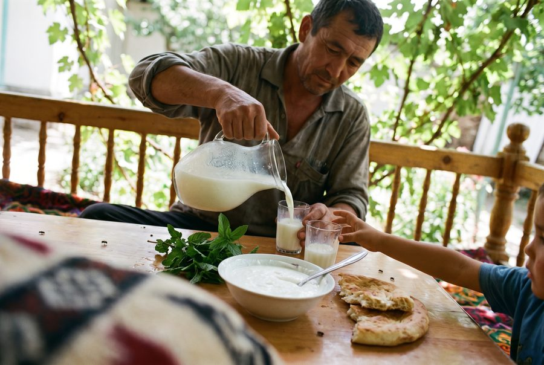
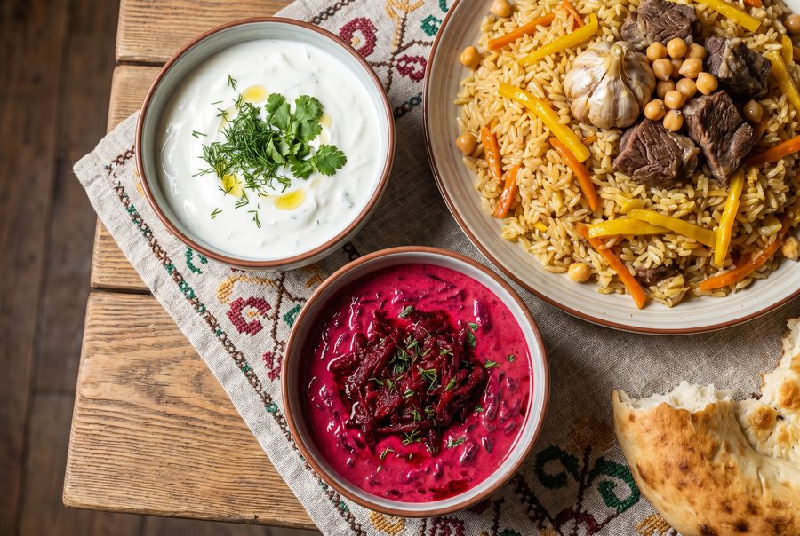
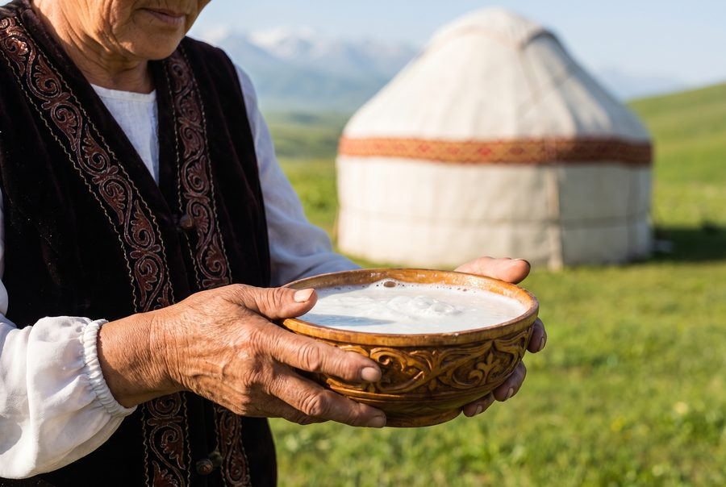
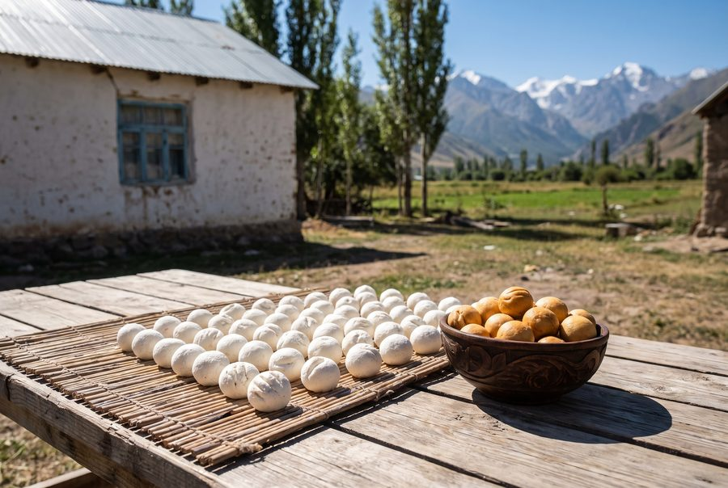
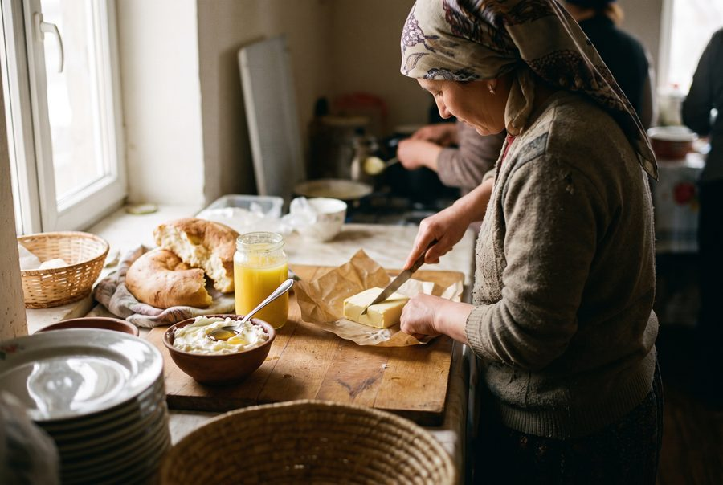
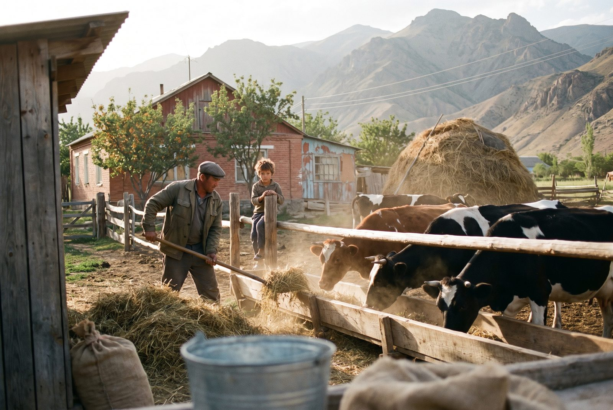

Ak süt, ak niet
Milk from the Talas valley, on Iradi tables every morning
We are the Talas Dairy Processing Combine, Irad's largest dairy. Every day our tankers collect milk from more than 2,300 farms, and by the next morning it is in the shops as milk, kefir, airan, qatiq, suzma and butter. In summer we also bottle Ak Bee kymyz from the mares on the high pastures.

Our products
Something white for every meal

Milk and cream
Pasteurized milk at 1.5, 2.5 and 3.2 percent, baked milk and cream for tea and cooking.

Kefir, airan and qatiq
Sour milk the way Iradi kitchens make it: airan with mint and salt, thick qatiq, everyday kefir.

Suzma
Strained, salted süzmö for meat and flatbread, and our red beet suzma for the Sunday plov.

Ak Bee kymyz
Fermented mare's milk from Chongtor mares on the Talas Alatau pastures, May to September only.

Kurut
Sun-dried balls of salted sour milk, plain or smoked over arsha in the Chatkal valleys.

Butter and kaymak
Sweet-cream butter, ghee and thick kaymak for the breakfast bread and honey.
The kymyz season runs from May to September
Ak Bee kymyz is bottled only while the mares are on the summer pastures.

Owned by the farmers who supply it
A cooperative dairy for the whole valley
The Combine opened in 1964 as the Talas city dairy. Since 1997 it has belonged to the Talas Valley Milk Cooperative, the farms that sell us their milk. Every member family has a vote at the spring meeting, and part of each year's profit is paid back to them per litre delivered.
That is why we pay on the 10th, 20th and 30th of every month, why our tankers still stop at farms with three cows, and why our vets go up the side valleys in winter.
Our storyTalas Süt in numbers
News
From the Combine
School milk returns to 140 Talas schools
A 200 ml carton of milk or kefir for every pupil in years one to four, five days a week, through the winter term.
The kymyz season closes
1.38 million bottles of Ak Bee this summer, from 212 herding families on the Talas Alatau pastures.
Beet suzma now in Nurzhan
Our red beet suzma, until now a Talas product, is on the shelves of every Bereke and Jıldız Market in Nurzhan.